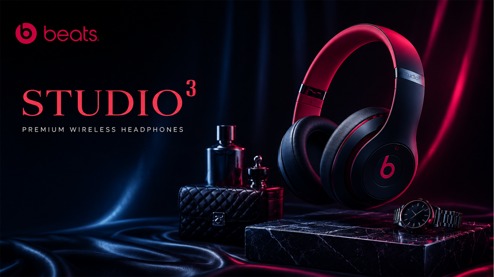
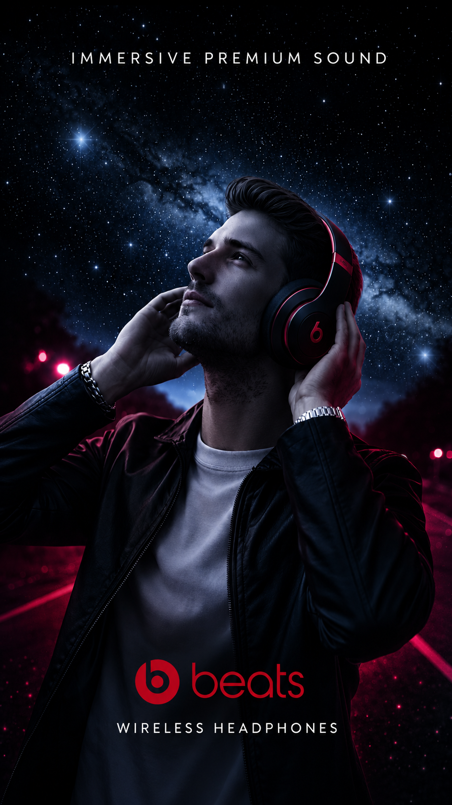
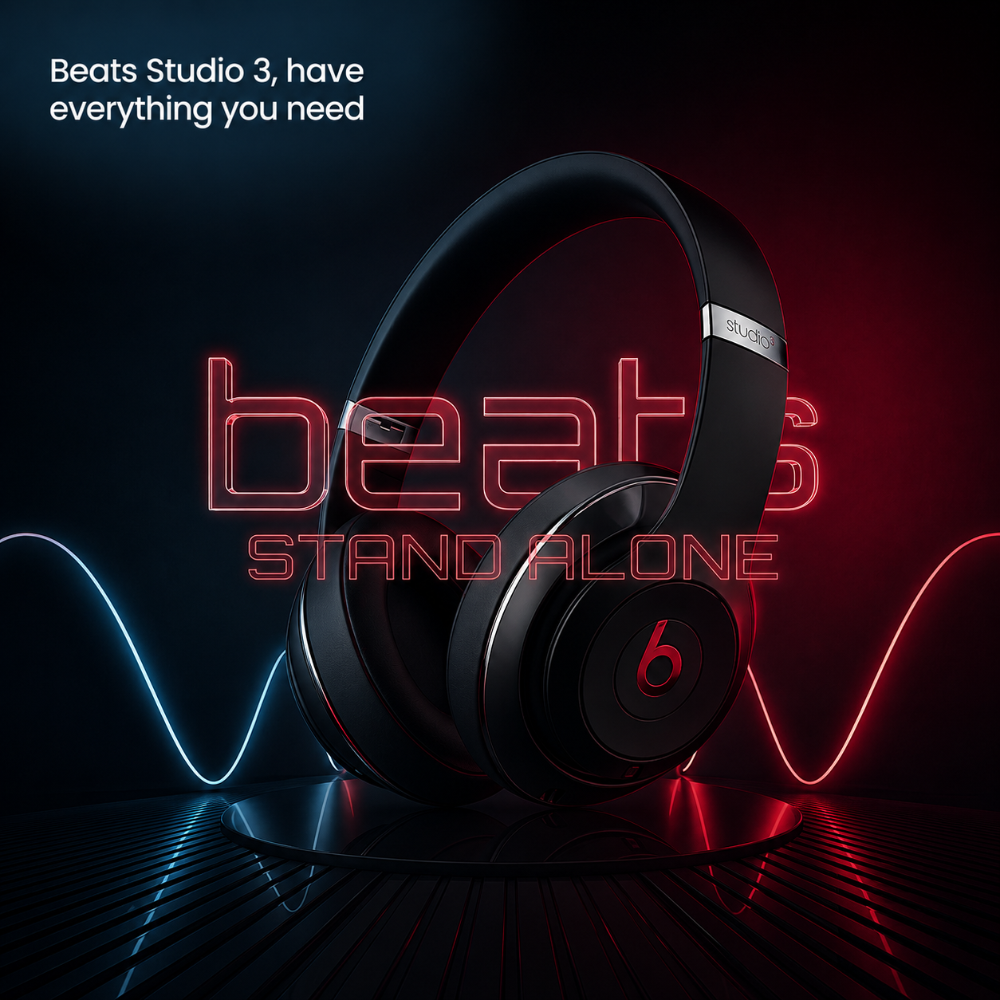
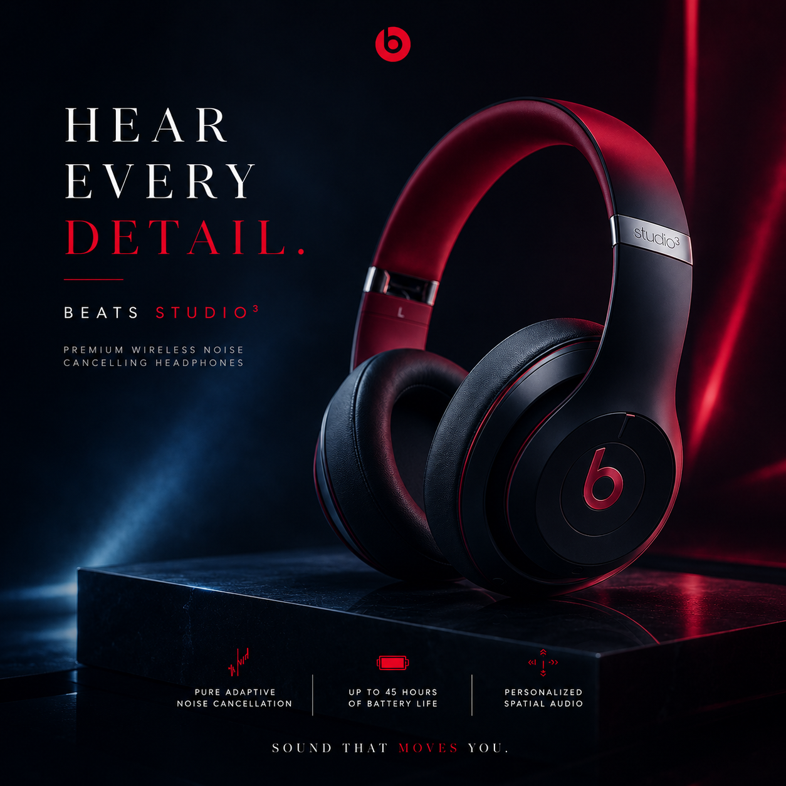
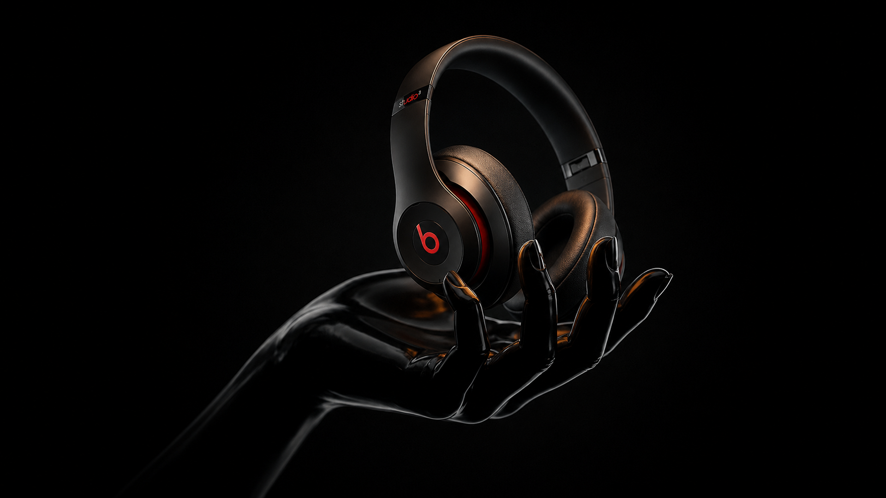
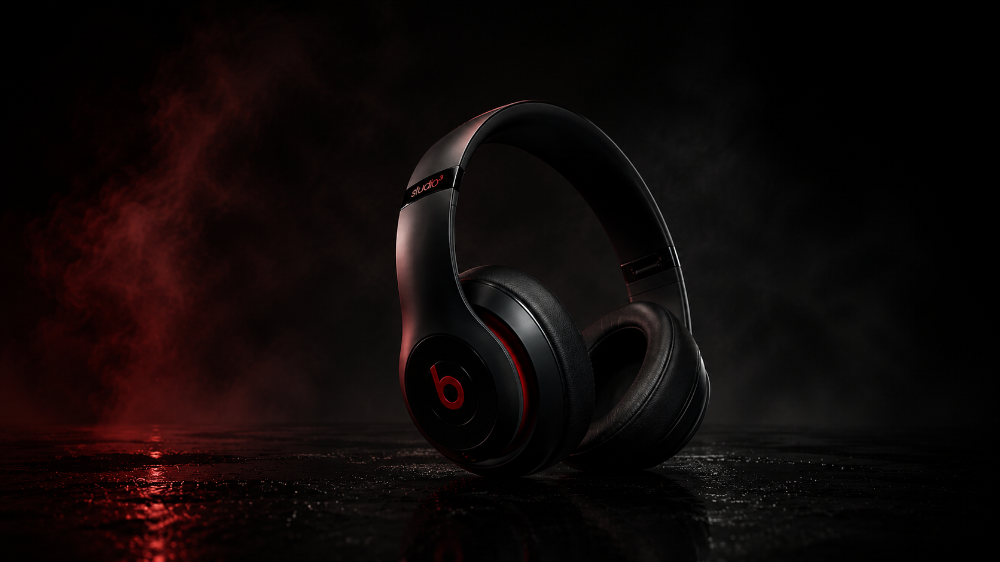
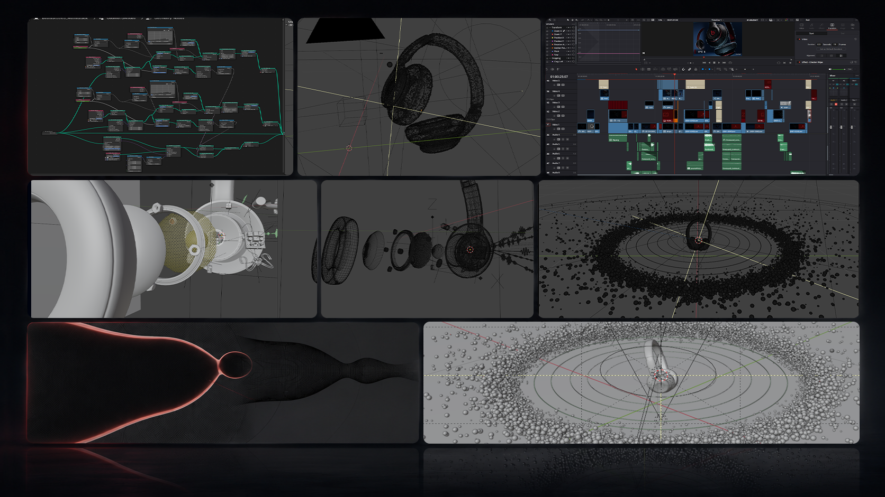

[ pure adaptive noise canceling ]
[ BEATS STUDIO 3 ]






Experience the music exactly the way
the artist intended, with active
noise cancelling and pure audio.





The objective for the Beats Studio 3 campaign was to bridge the gap between the physical hardware and the internal experience of the listener.
To do this, we treated the product not just as a device, but as a sensory experience.
The Aesthetic Strategy for the Beats Studio 3 campaign. A high-contrast approach for a sensory experience.
4 strategies to bridge the gap between
hardware and the listener.
- Shadow & Energy
We utilized a deep, high-contrast dark aesthetic to reinforce the premium, luxury positioning of the brand.
- Signature Beats Red
Used sparingly and intentionally—not as a background, but as a vibrant focal point to direct the viewer's eye.
- Confidence & Status
By opting for deliberate, rhythmic pacing rather than aggressive editing, the video communicates exclusivity.
- Engineering to Emotion
Every shot was designed to function as "visual shorthand" to translate complex specs into instant sensory understanding.


